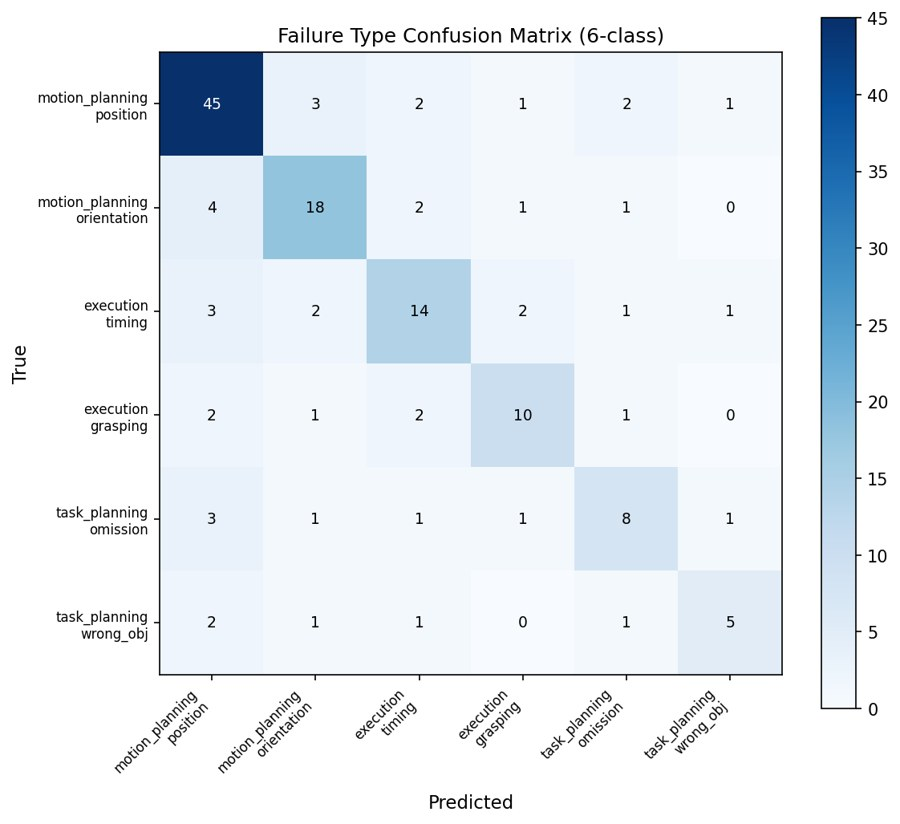
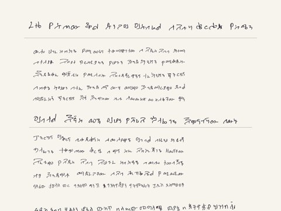
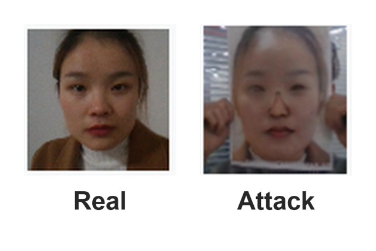
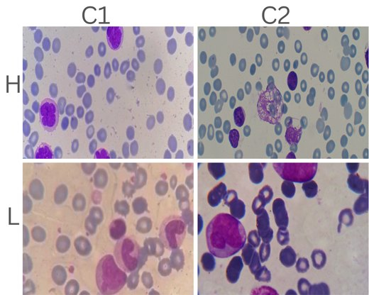

Miracle Olotuche James
I am a Research Associate at Carnegie Mellon University Africa in Kigali, Rwanda. I received my M.S. in Engineering Artificial Intelligence with distinction from Carnegie Mellon University and my B.Eng. in Electrical and Electronic Engineering from the Federal University of Technology, Minna.
My research goal is to build reliable, general-purpose robots for long-horizon and dexterous tasks. I have designed and trained reward-aligned policies for garment folding on physical robots, and built vision systems for detecting attacks on face biometric systems, low-cost leukemia detection for underserved communities, and handwriting recognition for African scripts.

Robot Learning

A reward model that estimates how far a task has progressed, trained on demonstrations replayed with speed changes, pauses and reversals. On 100 held-out episodes per task, it identified the direction of progress 97% of the time for towel folding and 95% for T-shirt folding, with about ten times lower progress error than a time-based baseline. On real policy rollouts, however, repeated failed grasps could still look like progress, which is the problem I want to solve next.
Used these progress estimates to train π0.5 with reward-aligned behavior cloning, which favors action chunks that move the task forward, and deployed it on dual-arm robots with real-time chunking. In towel folding, the reward-aligned policy finished more folds within two minutes than standard training (56% vs 42%) but succeeded slightly less often (93% of 104 attempts vs 98% of 50), suggesting that rewarding speed can crowd out slower corrective actions.
Extended reward-aligned training to multi-stage T-shirt folding, combining relative progress with a stage-aware reward model built across 12 tasks so the policy is rewarded for completing each stage, not just for moving.
Built a 1,397-question video dataset from raw robot logs, covering scene state, task stage, next actions and recovery after errors, and fine-tuned Molmo2-ER on it. Task-stage F1 rose from 0.14 to 0.92 and next-action F1 from 0.16 to 0.66. Recovery remained the hardest case, because cloth can go wrong in many more ways than a dataset can label.

A perception pipeline for towel-folding robots: tracking a towel under occlusion with Grounding DINO and SAM2, predicting where the grippers will act next with a DINOv2 encoder, and detecting failures from video with a vision-language model, where structured prompts raised F1 from 0.155 to 0.853.
Computer Vision

Leading OCR models fail on African scripts, and training on rendered text does not transfer to handwriting. This work composes verified handwriting lines into full pages with exact layout, reading order and transcription, and trains through a three-stage curriculum, cutting character error from 2.08 to 0.31 on 150 held-out pages. Extended to Ajami manuscripts in Hausa, Wolof and Fulfulde.

A single image model that detects both physical and digital face attacks, using a margin-based triplet loss and Soft ACER, a loss that trains on confidence scores to match the evaluation metric.

A two-stage system that detects white blood cells and their morphological attributes, then classifies five leukemia subtypes, designed for low-cost microscopes in under-resourced clinics.